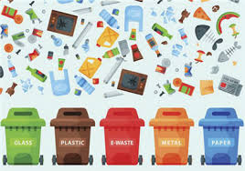

Classify images of recycleable waste and e-waste
Using deep learning to predict images of materials like glass, plastic, paper, metal, cardboard, and e-waste.
Explore thisPredict Yelp star rating of restaurants
Using supervised machine learning to predict star ratings of restaurants on Yelp.
Explore this
New York City 3D/VR interactive scene
Using Unity and C# to create a game that allows you to navigate the city with moving cars on streets.
Explore this
Boston crime data analysis with command-line interface
Using mySQL and Java to analyze Boston crime data and enable CRUD operations.
Explore this